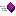

| An NDoc Documented Class Library |
|
ICommandProcessor Members
ICommandProcessor overview
Public Instance Methods
| DoCommand | Send the specified Selenese command to the browser to be performed |
| GetBoolean | Runs the specified Selenese accessor (getter) command and returns the retrieved result |
| GetBooleanArray | Runs the specified Selenese accessor (getter) command and returns the retrieved result |
| GetNumber | Runs the specified Selenese accessor (getter) command and returns the retrieved result |
| GetNumberArray | Runs the specified Selenese accessor (getter) command and returns the retrieved result |
| GetString | Runs the specified Selenese accessor (getter) command and returns the retrieved result |
| GetStringArray | Runs the specified Selenese accessor (getter) command and returns the retrieved result |
| Start | Starts a new Selenium testing session |
| Stop | Ends the current Selenium testing session (normally killing the browser) |
See Also
ICommandProcessor Interface | Selenium Namespace